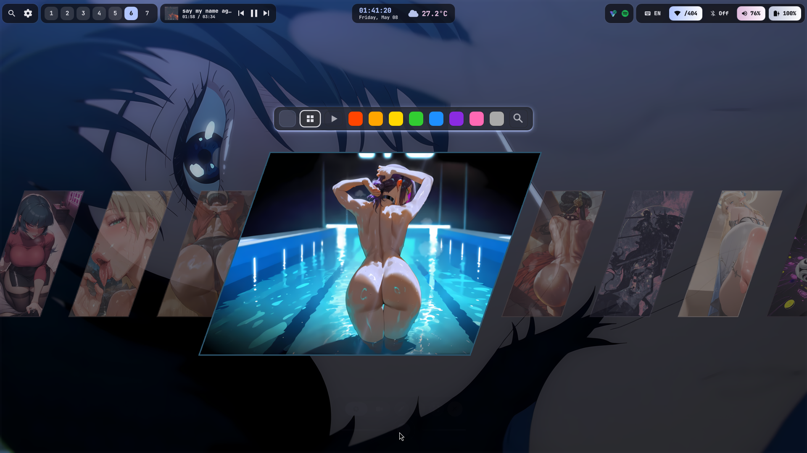
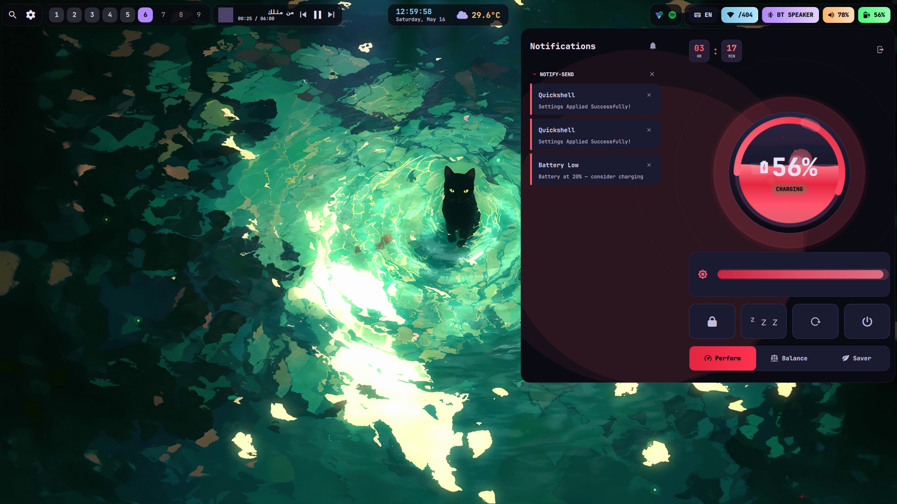
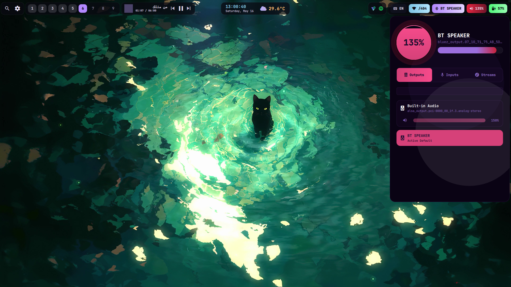
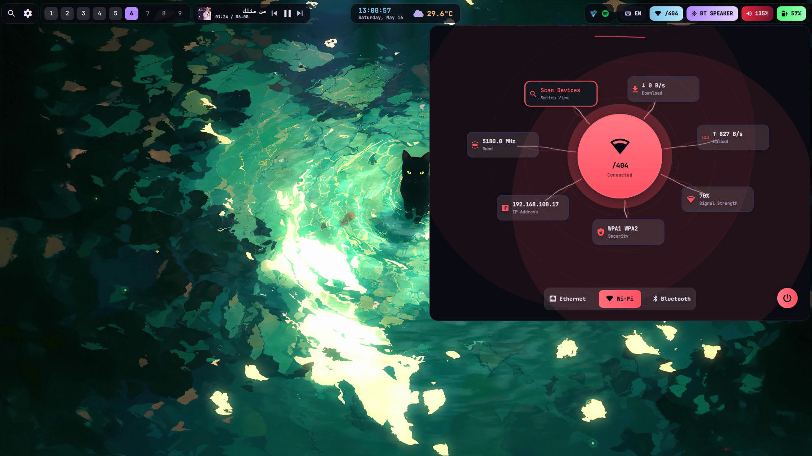
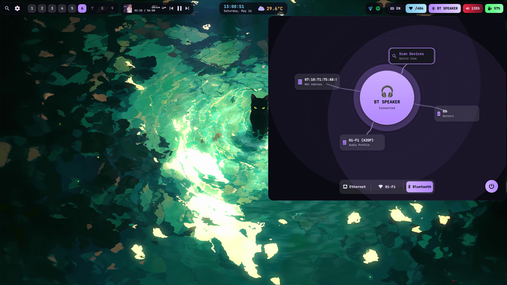
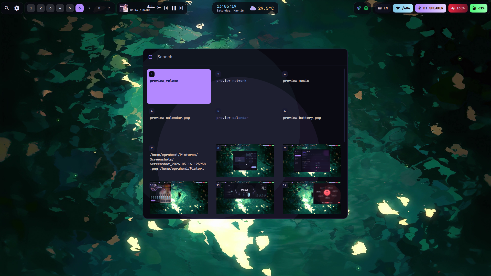
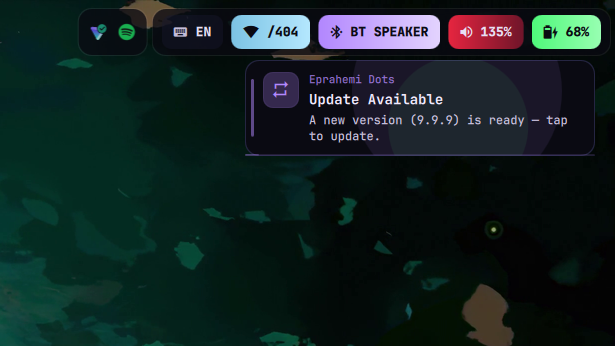

A deep dive into every component of the WifeRice desktop environment.

A horizontal scrolling wallpaper browser with color filters (Red, Orange, Yellow, Green, Blue, Purple, Pink, Monochrome, Video, All). Supports both images and video wallpapers (mpvpaper). One-click apply with random smooth transitions. Pre-generates thumbnails for instant loading. Orphan thumbnails are auto-pruned on every open.

A premium battery popup with animated liquid fill effects, shimmer bands, surface foam, floating embers, charging bubbles, and a click ripple. Drag up/down on the battery core to adjust screen brightness. Profile-based theming: performance = red, balanced = purple, power-saver = muted.

Real-time battery monitoring with low-battery notifications at 20%, 10%, and 5%. A critical 3% countdown with auto-suspend if no charger is plugged. Audio auto-switches between speakers, headphones, and Bluetooth — plug in and it just works. Volume slider supports 150% boost mode.

A network popup that shows WiFi strength, SSID, and ethernet status. One-click WiFi toggle and auto-refresh via nmcli monitor. Seamless switching between available networks.

A dedicated Bluetooth popup for device scanning, pairing, and connection management. One-click toggle and real-time device status updates.

A history-based clipboard manager that stores your recent copy operations. Browse, search, and re-copy previous clipboard entries. Integrates with wl-clipboard and cliphist for Wayland-native clipboard handling.

A background daemon (update_notifier.sh) checks for new dotfiles versions every 10 minutes. When a new version is detected, a notification appears with a one-click update button. The top bar shows a pending update indicator. All changes are documented in the Guide's Recent Changes tab.
Recorded walkthroughs of every WifeRice component in action.
Watch the premium battery popup with animated liquid fill effects, drag-to-brightness via the battery core, and profile-based color theming — all in real time.
See QuickShell's guided popup system in action — smooth slide-in transitions, dynamic Matugen theming, and responsive layout that adapts to any window size.
Experience the full-screen lock music player — frosted glass overlay, local MP3 playback with play/pause/skip, and PAM password authentication.
Manage your display layout with the monitor manager popup — drag to rearrange screens, change resolution and refresh rate, apply settings instantly.
WiFi, Ethernet, and Bluetooth management in one unified popup — one-click toggles, device scanning, and auto-refresh via network events.
QuickShell's settings panel gives you control over every aspect of your desktop — theme toggle, keybind management, update checks, and more.
Browse, filter by color, and apply wallpapers instantly — horizontal scrolling gallery with support for both images and video wallpapers via mpvpaper.
Check the weather forecast and your calendar in one beautiful popup — Matugen themed colors, auto-detected location, and event overview.